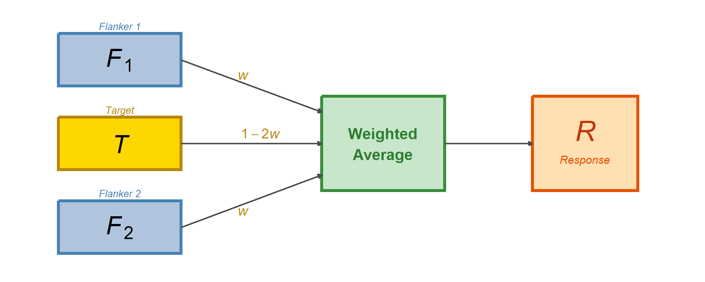
Cicchini et al. (2022, 2024) & The 2025 Superiority Debate
This lecture covers three closely connected papers that develop and debate a radical proposal about visual crowding:
| Paper | Key contribution |
|---|---|
| Cicchini, Chopin, & Burr (2022) | Crowding = optimal Bayesian integration (orientation) |
| Cicchini, D’Errico, & Burr (2024) | Same framework extended to color |
| Ozkirli et al. (2025) + Cicchini reply | Replication debate → “flexible integrator” |
The thread: Is crowding a processing bottleneck that destroys information, or an optimal integration strategy that can actually improve perception?
Crowding = inability to identify peripheral targets when flanked by nearby items.
Problems with this view:
Cicchini et al.’s claim: Crowding is optimal Bayesian integration.
The visual system computes a weighted average of target and flanker information:
This is the same logic as cue combination in multisensory integration — but applied to spatial neighbors in crowding.
If crowding = Bayesian integration:
| Prediction | Pattern | Why? |
|---|---|---|
| Bias | Derivative-of-Gaussian (DoG) | Weight × difference → peaks at intermediate d |
| Scatter | U-shape (minimum at d = 0) | Identical flankers = extra measurements → less noise |
| RMSE | Minimum at d = 0 | Scatter reduction outweighs bias at d = 0 |
The scatter prediction is the most radical: it says crowding can make you more precise than seeing the target alone.
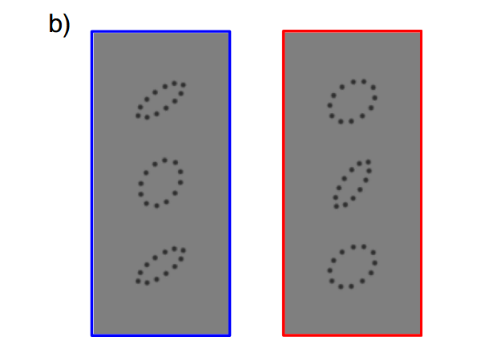
Two key manipulations:
N = 10 observers, 10,699 trials
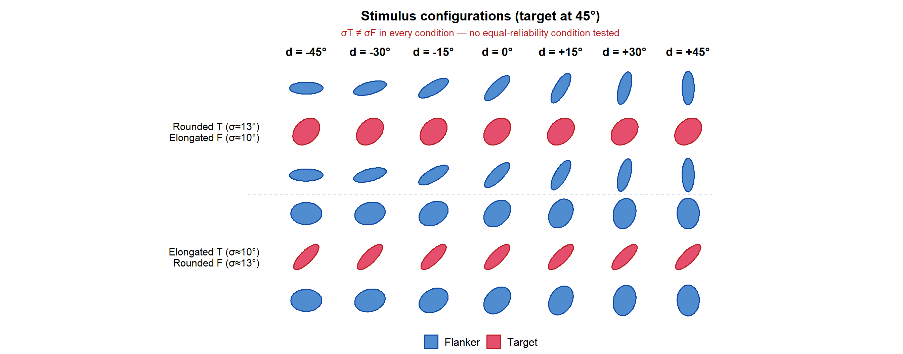
An ideal observer is a hypothetical system that performs optimally given the available sensory information.
Why use it? It sets an upper bound on performance.
| Comparison | Interpretation |
|---|---|
| Human = Ideal | Limited only by early encoding |
| Human < Ideal | Additional factors limit performance |
| Human \(\approx\) Ideal | System may be near-optimal |
The ideal response is a weighted combination of target and flankers:
\[R = w \cdot F_1 + w \cdot F_2 + (1 - 2w) \cdot T\]

\[w_{opt} = \frac{\sigma_T^2}{2\sigma_T^2 + \sigma_F^2 + 2d^2}\]
Intuition:
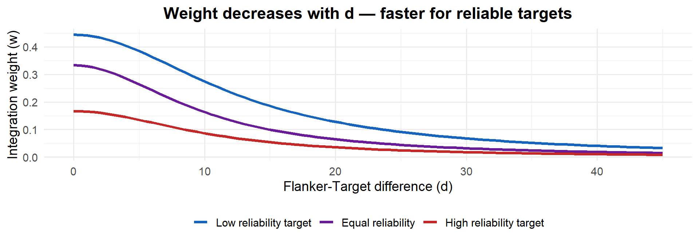
Bias = systematic shift toward flankers:
\[\text{Bias}(d) = 2w \cdot d\]
This product of a rising (\(d\)) and falling (\(w\)) term produces a Derivative-of-Gaussian (DoG) shape.
\[S^2 = 2w^2\sigma_F^2 + (1 - 2w)^2\sigma_T^2\]
This produces a U-shape: precision is best when flankers match the target.
RMSE combines bias and scatter: \(\text{RMSE} = \sqrt{\text{Bias}^2 + S^2}\)
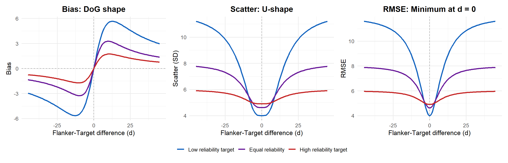
The basic IO always integrates. The Causal Inference (CI) model adds a gating step:
\[w = w_{max} \cdot P(\text{common cause} \mid d)\]
\[P(\text{common cause} \mid d) \propto \exp\!\left(-\frac{d^2}{2(\sigma_T^2 + \sigma_F^2)}\right)\]
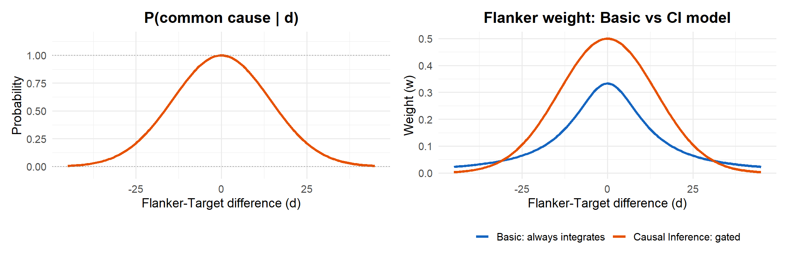
Key: Basic IO always integrates (\(w > 0\)). CI model gates integration on/off via P(common cause).
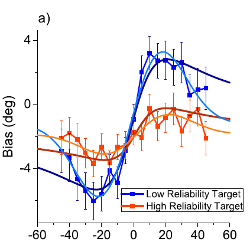
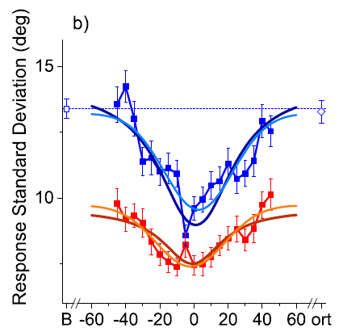
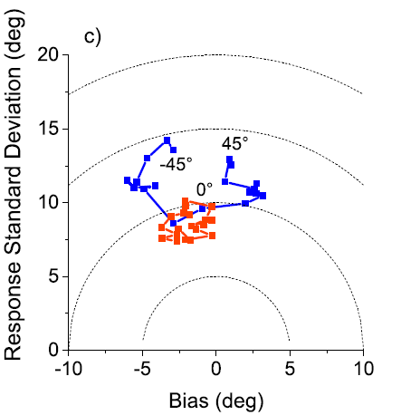
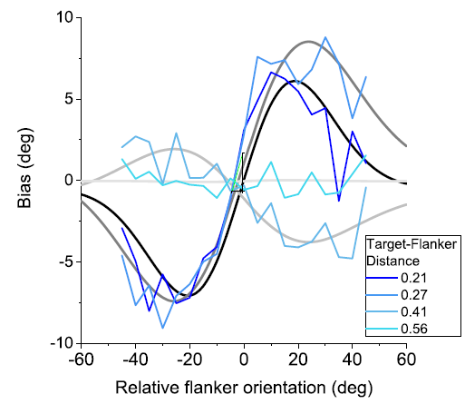
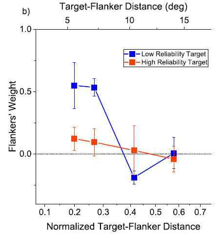
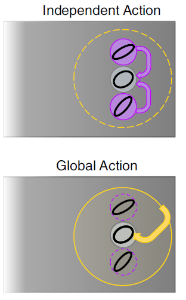
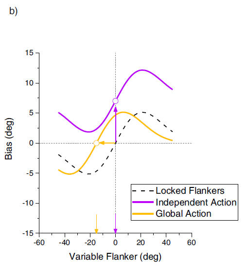
Question: Do flankers bias the target independently, or does the system compute a flanker average first?
Key prediction: DoG centered at 0° (independent) vs -15° (global)
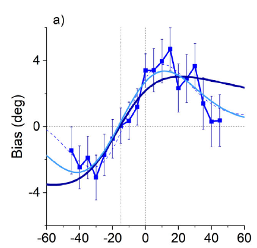
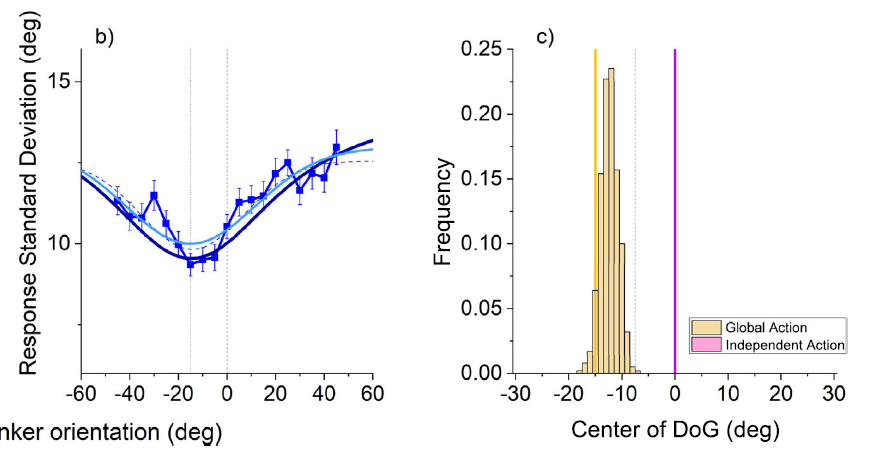
| Prediction | Confirmed? | Key finding |
|---|---|---|
| DoG bias | Yes | S-shaped, reliability-dependent |
| U-shaped scatter | Yes | Precision improves at d = 0, below unflanked baseline |
| RMSE minimum at d = 0 | Yes | “Crowding superiority effect” |
| Distance dependence | Yes | Follows Bouma’s law |
| Global integration | Yes | Flankers pooled first (BF = 61.5) |
| Cicchini 2022 | Cicchini 2024 | |
|---|---|---|
| Feature | Orientation | Color (hue) |
| Reliability | Shape-based (rounded vs elongated) | Purity-based (desaturated vs saturated) |
| Task | Reproduce orientation | 2AFC: “pinker or greener?” |
| New evidence | — | Reaction times confirm sensory-level effect |
Goal: Show that optimal integration in crowding is not feature-specific — it’s a general strategy.
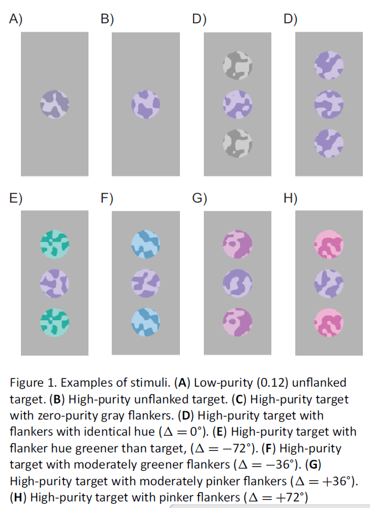
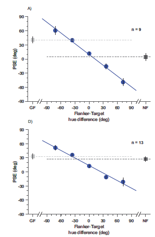
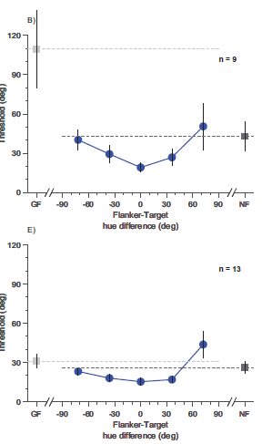
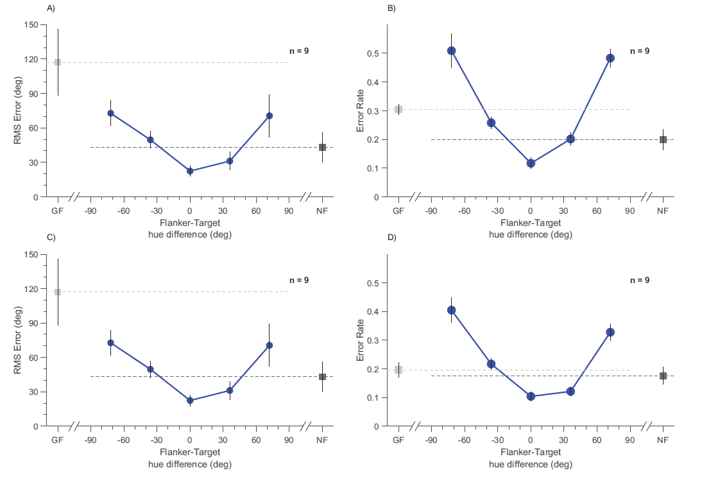
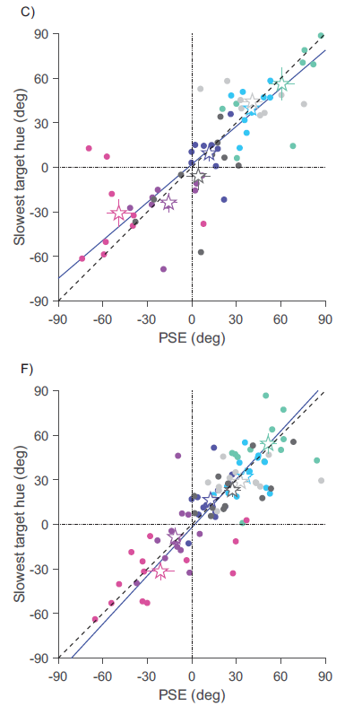
Substitution: Maybe observers accidentally report the flanker? But substitution = mixing two distributions → curve gets broader. Data shows curves getting narrower → system is averaging, not randomly picking.
Greenwood & Parsons (2020): Found crowding hurts precision. But they fixed flanker hue to reference → uncontrolled flanker-target difference across trials. Key: flankers only help when yoked to the target.
All three predictions confirmed for color:
| Metric | Result |
|---|---|
| Bias slope | 0.76 (unreliable) vs 0.53 (reliable) — reliability-weighted |
| JND at \(\delta = 0\) | 0.58x baseline \(\approx 1/\sqrt{3}\) (optimal 3-item average) |
| RMSE at \(\delta = 0\) | 0.52x baseline |
| RT correlation | r = 0.83–0.84 — sensory-level integration |
Crowding as optimal integration is not feature-specific — it’s a general spatial strategy.
| Ozkirli et al. 2025 | Cicchini et al. 2022 | |
|---|---|---|
| N | 20 | 10 (main) + 8 (control) |
| Design | Within-subjects | Between-subjects for baseline |
| Target orientations | Same across conditions | Different for flanked vs unflanked |
| Data analysis | Per-participant | Aggregated |
| Scatter pattern | M-shape | U-shape |
| Claim | Crowding only deteriorates | Crowding can improve |
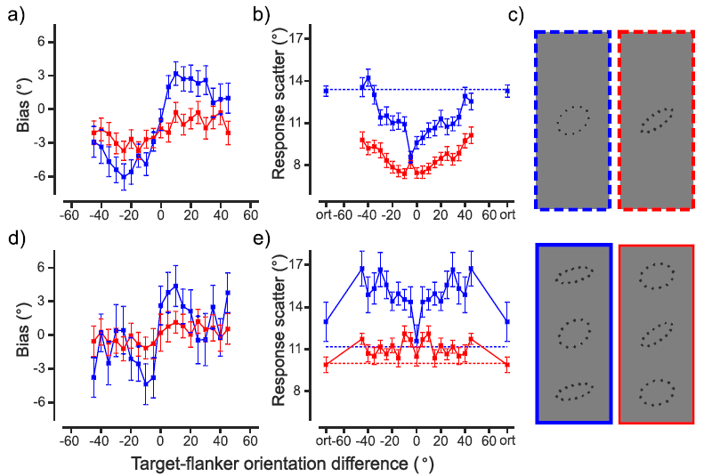
Top: Cicchini’s original — U-shape, minimum at d = 0.
Bottom: Ozkirli’s replication — M-shape. Scatter similar at d = 0 and 90°, worst at intermediate d.
Bayes factors:
Cicchini 2022 problems identified by Ozkirli:
Theoretical concerns:
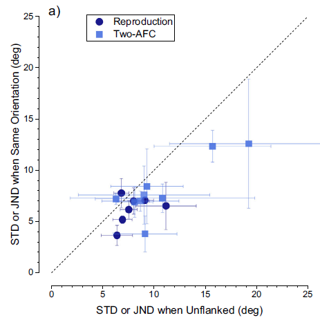
Fig 1a: Each point = one participant. Below diagonal = flankers helped.
Navy circles (N = 7): Same task, identical flankers only, same orientations across conditions.
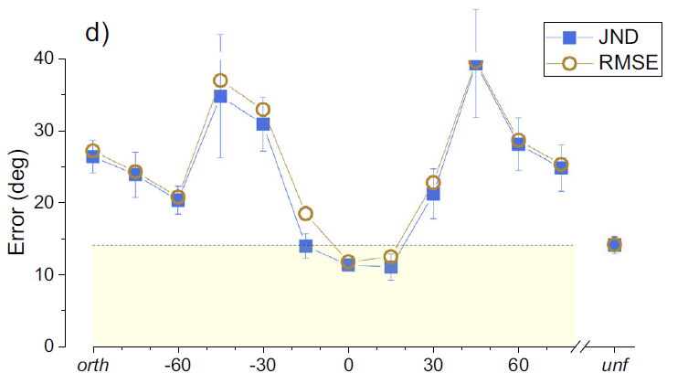
Fig 1d: Blue = JND, brown = RMSE. Yellow zone = better than unflanked.
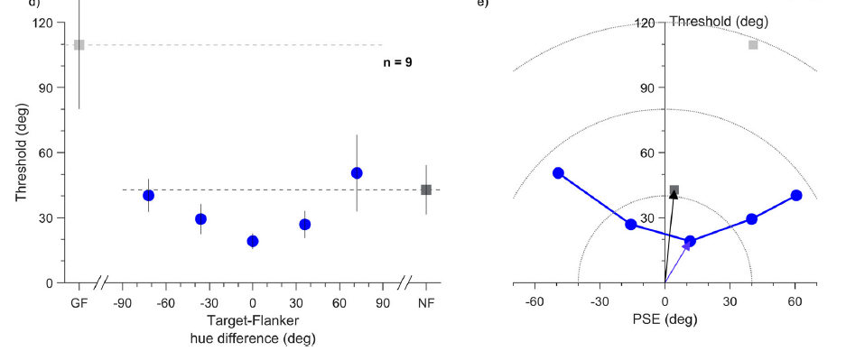
Cicchini et al. acknowledge key limitations:
Against substitution (Ozkirli’s alternative):
What both sides agree on:
| Issue | Ozkirli | Cicchini |
|---|---|---|
| Magnitude at d = 0 | No improvement beyond baseline | 22% improvement (significant) |
| Mechanism | Probabilistic substitution | Reliability-weighted integration |
| Framework | “Crowding only deteriorates” | “Flexible integrator, broadly Bayesian” |
| Finding | Status |
|---|---|
| DoG bias | Replicated by both labs |
| U-shape scatter | Not replicated — M-shape instead |
| Superiority at d = 0 | Cicchini replicates (3x), Ozkirli finds no change |
| M-shape at dissimilar d | Both labs agree |
| Strict IO model | Rejected — replaced by “flexible integrator” |
1. Crowding is not a simple bottleneck — it involves reliability-weighted integration of nearby items.
2. Three predictions confirmed across orientation and color: DoG bias, precision improvement, RMSE reduction with identical flankers.
3. The 2025 debate refined the model: not a rigid ideal observer, but a “flexible integrator” that follows Bayesian principles at d = 0 but deviates at large differences.
4. For identical items (d = 0), all parties agree: integration is beneficial or at minimum harmless.
\[\text{Optimal (2022)} \longrightarrow \text{Challenged (2025)} \longrightarrow \text{Flexible integrator}\]
Primary papers:
Related: